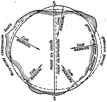

<!DOCTYPE HTML>
<html>

<head>
  <title>Help for coord systems</title>
  <meta http-equiv="content-type" content="text/html; charset=UTF-8" />
  <link rel="stylesheet" type="text/css" href="styles/style.css" />
  <script type="text/javascript" src="script/modernizr-1.5.min.js"></script>
</head>

<body>
  <div id="main">
    <header>
      <div id="logo">
        <h1><a href="geographic.html">Help for coord systems</a></h1>
      </div>
      <nav>
        <ul class="sf-menu" id="nav">
          <li><a href="geographic.html">Географические</a></li>
          <li><a href="geocenter.html">Геоцентрические</a></li>
          <li><a href="mercator.html">Проекция Меркатора</a></li>
          <li><a href="gauss.html">Проекция Гаусса</a></li>
          <li><a href="azimut.html">Азимутальная проекция</a></li>
        </ul>
      </nav>
    </header>
    <div id="site_content">
      <div id="content">
        <ul class="slideshow">
          <li class="show"></li>
        </ul>
        <div id="content_item">
          <h2>Географические координаты</h2>
            <p>Географическая (или геодезическая) система координат (ГСК) использует трехмерную
                сферическую поверхность для определения местоположения объектов на поверхности
                Земли. ГСК часто неверно называют датумом, в то время как датум является лишь час-
                тью географической системы координат. ГСК включает угловые единицы измерения
                координат, нулевой меридиан и датум (основанный на сфероиде).
                Точка на сфероиде определяется значениями широты и долготы. Широта и долгота
                - это углы, вершина которых расположена в центре Земли, а одна из сторон проходит
                через точку на земной поверхности. Углы, как правило, измеряются в градусах (или в
                градах).</p>
            <p>В сферической системе “горизонтальные линии” или
                линии, соответствующие направлению восток-запад,
                 это линии равной широты, или параллели. “Вертикальные линии”, или линии идущие в направлении с
                юга на север,  это линии равной долготы, или меридианы. Эти линии опоясывают глобус и образуют сеть
                географической координатной привязки, называемую
                картографической сеткой.
                Линия широты, которая расположена посередине между
                полюсами, носит название экватора. Она соответствует линии нулевой широты. Линия нулевой долготы
                носит название нулевого (или начального) меридиана. Для большинства географических систем коорди
                нат нулевой меридиан  это линия долготы, проходящая через обсерваторию Гринвич в Англии. Некоторые страны используют в качестве нулевых меридианов линии долготы, проходящие через Берн, Боготу
                или Париж.</p><p>
                Начальная точка картографической сетки (0,0) определяется местом пересечения экватора и нулевого
                меридиана. Затем глобус делится на четыре географических квадранта (четверти шара), которые определяются показаниями компаса в начальной точке. Север и юг расположены соответственно выше и ниже
                экватора, а запад и восток  соответственно слева и
                справа от нулевого меридиана.
                Значения широты и долготы, как правило, измеряются либо в десятичных градусах, либо в градусах, минутах, секундах (DMS). Значения широты отсчитываются относительно экватора и могут изменяться от 
                90° на Южном полюсе до +90° на Северном полюсе.
                Значения долготы отсчитываются относительно нулевого меридиана. Они могут меняться от 180° при движении на запад от нулевого меридиана и до 180° при
                    движении на восток от нулевого меридиана. Если за
нулевой меридиан принят Гринвич, то координаты в
Австралии, расположенной к югу от экватора и к востоку от Гринвича, будут иметь положительные значения долготы и отрицательные значения широты.</p>
            
            <p>Хотя значения широты и долготы используются для
определения точного положения точки на поверхности шара, эти величины не являются универсальными
единицами измерения. Только вдоль экватора расстояние, соответствующее одному градусу долготы
примерно равно расстоянию, соответствующему
одному градусу широты. Это происходит изза того,
что экватор  это единственная параллель, чья длина
равна длине меридиана. (Окружности, у которых тот
же радиус, что и у сфероида Земли, носят название
больших окружностей. Экватор и все меридианы
являются большими окружностями.)
                              </p><div></div><p>Форма и размер поверхности географической системы координат определяется сферой или сфероидом.
Хотя форма Земли лучше отображается сфероидом,
форма Земли иногда принимается за сферу, что облегчает выполнение математических вычислений. Допущение, что Земля является сферой, возможно для
мелкомасштабных карт (для карт, чей масштаб мельче 1 : 5 000 000). В этом масштабе разница между
сферой и сфероидом не различима по карте. Тем не
менее, для получения точности на крупномасштабных
картах (картах масштаба 1:1 000 000 или крупнее),
для описания формы Земли необходимо пользоваться
сфероидом. Для карт, чей масштаб лежит в диапазоне
между этими двумя масштабами, использование сферы или сфероида зависит от назначения карты и от
требуемой точности данных.</p><p>Фигура, наиболее точно описывающая форму Земли - геоид.
     Но так как определить с требуемой точностью положение центра масс Земли проблематично, да и описать все неровности поверхности планеты, используют для расчетов эллипсоиды вращения.</p>
            
        </div>
      </div>
    </div>
    <footer>
      <p><a href="geographic.html">Географические</a> | <a href="geocenter.html">Геоцентрические</a> | <a href="mercator.html">Проекция Меркатора</a> | <a href="gauss.html">Проекция Гаусса</a> | <a href="azimut.html">Азимутальная проекция</a></p>
              <p>Copyright © alexroverandom</p>
    </footer>
    <p>&nbsp;</p>
    <p>&nbsp;</p>
  </div>
  <script type="text/javascript" src="script/jquery.js"></script>
  <script type="text/javascript" src="script/jquery.easing-sooper.js"></script>
  <script type="text/javascript" src="script/jquery.sooperfish.js"></script>
  <script type="text/javascript" src="script/image_fade.js"></script>
</body>
</html>
